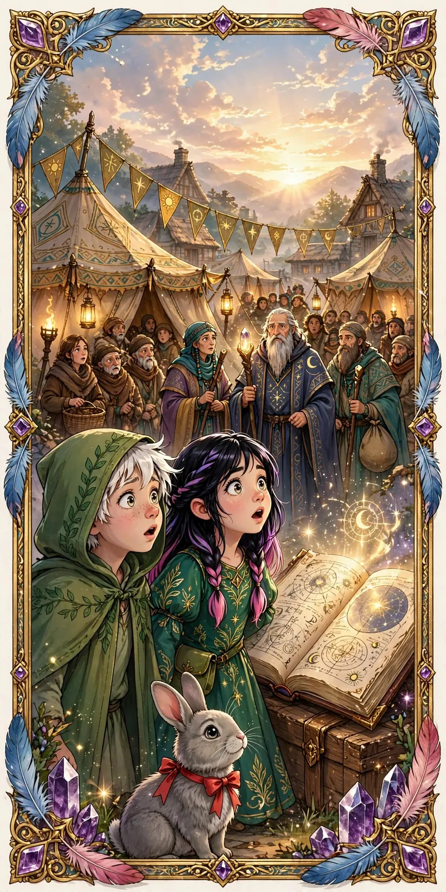

01 / 10
Capítulo 09 • ILa Llegada de los Sabios Nómadas
Con los primeros rayos del sol, el pueblo de Liam y Elara despertó con una sorpresa. Un grupo de sabios nómadas, portadores de enseñanzas antiguas, había llegado durante la noche. Traían consigo carpas cubiertas de símbolos ancestrales y antorchas que emitían una luz cálida, creando un ambiente de misterio y expectación. Los habitantes, llenos de curiosidad, comenzaron a reunirse alrededor de las carpas, ansiosos por descubrir qué sabiduría traían estos visitantes inesperados.
